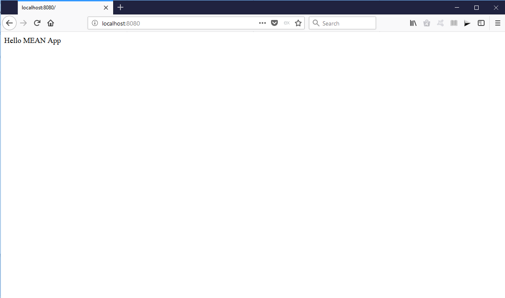

Objectives: We'll build an web app to manage our catalogue of books
Installing Node and Express
There are a lot of things to install. First, download and install nodejs
You can check if you already have it installed using the command node -v
Create a folder for the project (named books-catalogue). Open a command terminal and run in the folder directory
This will set up the configurations for our project. Follow the prompt. The most important thing is to set the entry point as index.js. This will create a package.json file in the root directory.
Run the command below to install Express
After installing. Create the entry file index.js and add the content
We are going to use nodemon to ensure that changes are automatically effected. Run the command below to install nodemon
To start the app, run
Head over to the browser and enter the url localhost:8080/

Installing Mongodb
Download Community Version of Mongodb from here
Working with the database from the terminal can be very tasking. So, we are going to use Robomongo. Download here
To run the database. Open a new command terminal, navigate to the folder where it is installed. for windows, the path is something like C:/Program Files/MongoDB/Server/3.4/bin. Run
With the database running. Note the Port from the terminal. Open robomongo and connect to the database. This gives us a UI for working with mongodb.
Back to our project folder, install mongoose by running the command below in the project folder directory.
Import it to app. Modify index.js
We'll store our configurations in a separate file to avoid duplicating our code. Create a folder named config. Create a new file in this folder database.js
database.js
The secret will be used to manage sessions and other encryptions throughout our app and we have use crypto to generate some random digits.
Modify index.js to connect to our database using mongoose.
Make sure that the mongodb instance is running. You should see connected to database_name in the console.
Installing Angular
Run the command below to install angular globally on your computer
After installing the angular cli. We can use it to scaffold a new angular app. Run the command below in the project directory to creates a new angular app.
The app is named client. The ng serve command starts a live development server. Head over to the browser and enter http://localhost:4200, you should see the welcome page with the app works! message.
If you have no idea on how angular works, try reading the documentation. Everything in angular is a component. From a page, the navbar and so on. The components are injected where the selector is used.
When we are ready for production, we build the frontend (angular). Run the command below in the client directory
This creates a production ready version of the app. Notice the dist directory that is created in the client directory.
From now on, we'll refer to the node part a the backend and angular folder as the frontend or client.
In the backend, Modify the index.js file to redirect all request to the frontend.
The way we develop with angular is that we are going to have both server running: localhost:8080 for the backend and localhost:4200 for the frontend.
With both servers running, refresh the backend, you should now see the index.html view.